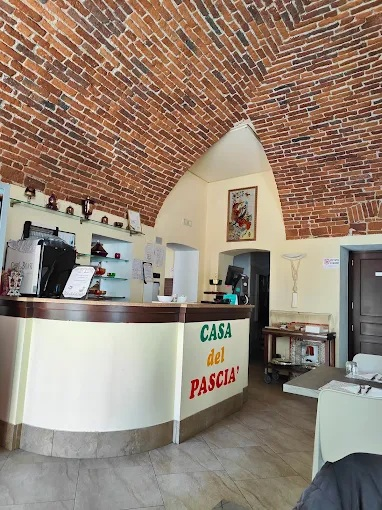

Casa del Pascià
Un varco tra le vie del Cairo e i vicoli di Marrakech, aperto ogni sera nel cuore di Cuneo.Due terre, una sola tavola
Casa del Pascià nasce dall'incontro di due cucine sorelle: quella egiziana e quella marocchina, portate a Cuneo con le ricette di famiglia e la voglia di far sentire ogni ospite come a casa propria.
Chi entra viene accolto tra profumi di cumino e cannella, tessuti e lanterne, e trova un titolare pronto a raccontare ogni piatto nel dettaglio, dalla marinatura del pollo alla scelta delle spezie del tajine.
Il rituale del tè alla menta chiude ogni cena come si usa nei riad marocchini: versato da in alto, dolce e caldo, è il momento in cui la sala si ferma un istante.
Cucinato al momento
Ogni piatto viene preparato all'ordine, con verdure e carni fresche.
Ricette di famiglia
Spezie ed equilibri tramandati, senza scorciatoie.
Sala per gruppi
Spazi accoglienti, curati e adatti anche a tavolate numerose.
Rituale del tè
Il tè alla menta versato al tavolo, per chiudere la cena in bellezza.

Accoglienza gentile fin dall'ingresso: falafel di fave sorprendenti, tajine d'agnello morbidissimo e un dolce alle mele e cocco da ricordare.
Piatti marocchini ed egiziani rivisitati con prodotti freschi, tempi d'attesa contenuti nonostante la cucina a vista, porzioni abbondanti e servizio cordiale.
Locale piccolo ma accogliente e pulitissimo, con un titolare pronto a spiegare ogni piatto nel dettaglio. Qualità e quantità hanno convinto fin dalla prima visita.
Un ambiente familiare in cui sentirsi davvero a casa, con piatti marocchini curati in ogni dettaglio: un viaggio autentico tra i sapori del Maghreb.
Il tè alla menta accompagna una cena ricca e curata, mentre la musica di sottofondo aiuta a immergersi davvero nell'atmosfera egiziana e marocchina.
I falafel migliori mai assaggiati, un piatto della casa e un tajine di vitello serviti in un locale pulitissimo, con un proprietario estremamente ospitale.
Dove siamo
Vi aspettiamo a Cuneo
Via S. Croce 38, 12100 Cuneo
Cena · si consiglia la prenotazione
Egiziana, Marocchina, Mediterranea